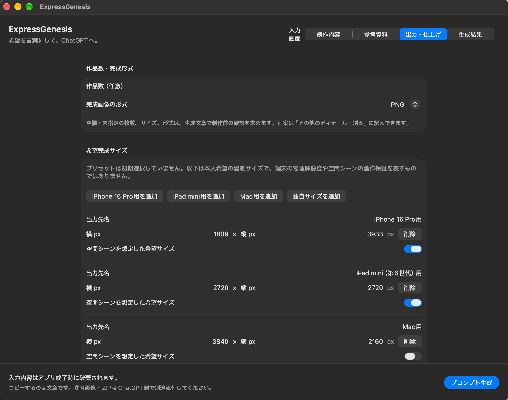
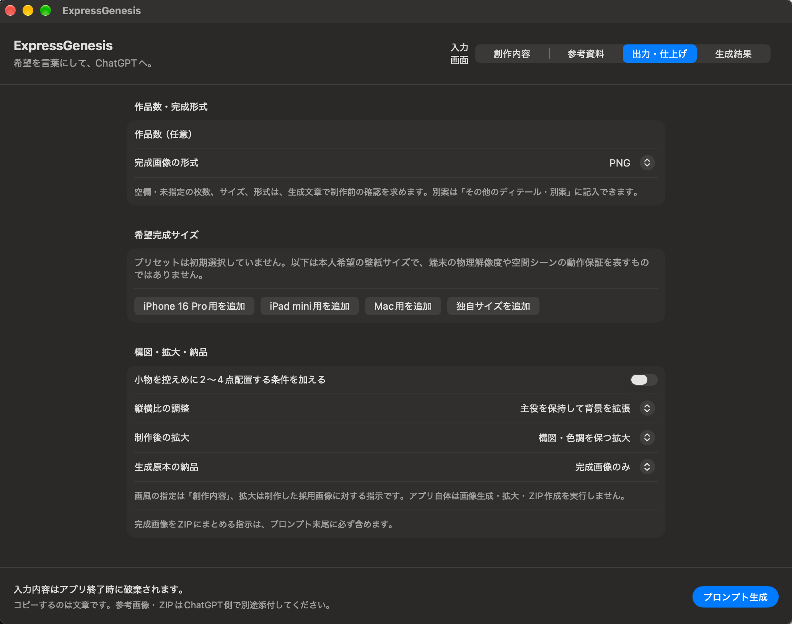

思い描くことと、仕上げたい形を一緒に
描いてほしい主役、参考画像から取り入れたい雰囲気、壁紙に使う完成サイズ。条件が増えるほど、依頼の文章を整えるのにも手間がかかります。ExpressGenesis は、その希望を項目ごとに整理して、一つの指示文にまとめるために作っています。
アプリ内で行うのは、入力内容の検証・文章の組み立て・コピーです。画像の生成・拡大・ZIP 作成は ChatGPT 側へ依頼します。画像や ZIP の読み込み・内容確認、自動添付、自動送信は行いません。
言葉を選ぶところから、コピーまで
13項目で、描きたいことを具体的に
用途、被写体・モチーフ、シーン、表情・動作、画風・質感、構図、光、色、ディテール・別案、守る条件、避けたいこと、任せる範囲、画像内の文字・配置を入力できます。すべてを埋める必要はありません。
説明付きの候補から、表現を探す
創作内容の13項目に497の候補を収録。「候補一覧」を開き、ボタンにマウスを合わせると説明を表示します。候補は入力欄の末尾へ追加し、文字を選択しているときはその部分を置き換えます。手入力での編集や、欄ごとの消去もできます。
参考資料の役割を、混ぜずに伝える
参考画像・画像入り ZIP のファイル名と、参考にする点・維持する点・変更してよい点を記入。「各画像から個別に制作」「組合せ」「役割別の参照」を選べます。主役のモチーフと、構図や雰囲気の参考を分けて指定できます。
サイズと仕上げの希望も、同じ文章へ
iPhone・iPad・Mac 用の希望完成サイズや独自サイズを追加し、複数の出力先を指定できます。PNG／JPEG、縦横比の調整、拡大方針、原本を含めるかも選択。ZIP にまとめて納品する依頼を、文章の末尾に添えます。
生成結果を確認して、すぐに渡す
「プロンプト生成」または ⌘＋Return で文章を生成し、自動コピー。「生成結果」で内容を確認できます。入力を変えると再生成を案内し、入力不備があるときはクリップボードを書き換えません。
出力と仕上げを、画面で確認




上の2枚は2026年10月21日、0.1.3（4）の UI 検証で取得。ページ上部の候補一覧は2026年10月20日、0.1.1（2）の UI 検証画像です。「古い用途」は選択置換のテスト用入力です。いずれも周囲のデスクトップを除き、アプリのウィンドウ部分だけを切り出しています。本文は0.1.3の実装と照合しています。
基本の使い方
アクセス権のある試用者向けの操作です。一般向けのダウンロードは用意していません。
- 「創作内容」を入力する。被写体・シーン・参考資料のいずれかで、何を作るかを指定します。自由文と候補語を組み合わせ、必要な欄だけ記入してください。
- 必要なら「参考資料」を追加する。実際に添付するファイル名と役割を入力し、資料の扱い方を選びます。画像入り ZIP の枚数は任意の手入力で、アプリが中身を数えるものではありません。
- 「出力・仕上げ」を選ぶ。作品数、希望完成サイズ、形式、縦横比と拡大の方針を指定します。Mac の壁紙なら「Mac用を追加」で横3,840×縦2,160 px を追加できます。
- 「プロンプト生成」で文章をコピーする。生成結果を読み、コピーの成功表示を確認します。コピーできない場合は、生成結果の文章を選択して手動でコピーできます。
- ChatGPT へ貼り付ける。参考資料を使う場合は、文章に記載した名前と一致する実ファイルを ChatGPT 側で添付して送信します。入力を修正したら、再生成・再コピーしてください。
たとえば、Mac の壁紙を依頼するなら
入力例 / 架空の制作条件
- 用途・主役
- Mac の壁紙。月明かりの庭にいる白い猫。
- 画風・構図
- 水彩風。主役は右寄せ、左側に余白を残す。
- 出力・仕上げ
- 1作品、Mac 用 3,840×2,160 px、PNG。背景拡張と構図・色調を保つ拡大。
この条件を入力して生成すると、創作内容と仕上げの希望、実寸法・形式の確認、ZIP 納品の依頼をまとめた文章になります。
入力例は使い方を示すもので、生成画像や納品結果の作例ではありません。
利用前に知っておきたいこと
- 希望サイズと実際の納品サイズを区別します。プリセットは希望する完成ピクセル寸法です。端末の物理解像度や、壁紙の空間シーン機能の動作を保証するものではありません。
- 必要な未指定事項は、制作前の確認を依頼します。空の任意見出しは省略し、作品数やサイズなどが未指定なら、生成文で受け手に確認を求めます。自由文の意味の矛盾や参考画像の中身を自動判定する機能はありません。
- 画像の完成には、ChatGPT 側での操作が必要です。文章のコピー成功は、画像生成・拡大・ZIP 納品の完了を意味しません。生成後の画質・形式・実寸法・ZIP 内容は、受け取ったファイルで確認してください。
入力とクリップボードの扱い
創作内容・参考資料の指定・生成文はアプリのメモリ内で保持し、入力の復元や履歴保存は行いません。終了すると失われるため、残したい文章は終了前に別途保存してください。アプリから外部サービスへ自動送信する機能はありません。
生成した文章は macOS の一般クリップボードへ書き込みます。アプリを終了してもコピー済みの文章まで消去する機能はありません。履歴を保持するクリップボード管理アプリなどの扱いにもご注意ください。
ChatGPT に貼り付けて送信した文章と添付資料は、送信先のサービスや利用者の設定に従って扱われます。詳しくはプライバシーポリシーの ExpressGenesis 節へ。
開発状況・入手について
開発中・非公開です。アプリ本体とソースコードの一般公開・一般配布は行っていません。一般公開の時期・価格は未定です。機能や画面は変更される場合があります。
掲載内容は 時点の 0.1.3（4）に基づきます。macOS 26 以降・Apple Silicon 専用です。アクセス権のある利用者向けには、Private リポジトリの Releases で Developer ID 署名・Apple 公証済みの ZIP を提供しています。
開発 Mac（macOS 27.0.1・Apple Silicon）で文章組立や UI の検証記録があります。macOS 26 実機での動作と、ChatGPT 側での画像生成・拡大品質・完成寸法・ZIP 納品は継続確認の対象です。